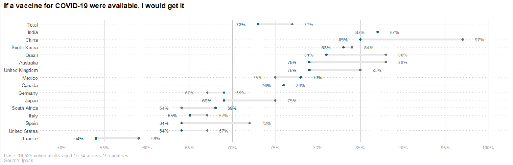

Reproducible Research
The role of transparancy and reproducible research in (Data) science has been growing for years. Let me explain how transparancy and reproducibility helped me learn and become a better analist.
Read moreThe Best Way to Predict Your Future is to Create it. (Abraham Lincoln)
Now that I've been given the tools to undertake basic Data Science analysis, my ultimate objective is to be a Molecular Biologist with professional Data Science skills. I've designed a three-step approach to achieve my aim of learning the programming languages Bash and R. These steps are time blocks of three months, one year, and five years in which I will pursue an internship that mixes lab work with Data Science analysis and then pursue a position that will allow me to advance and gain expertise in my profession
The role of transparancy and reproducible research in (Data) science has been growing for years. Let me explain how transparancy and reproducibility helped me learn and become a better analist.
Read moreThe span of three months equals light years in the world of Data Science. Allow me to explain what I plan to do to improve my skills in the upcoming three months.
Read moreI plan to integrate laboratory work with Data Science in the coming year. The aim is to use Bash and/or R to improve an analysis or technique.
Read moreFive years fly by in the blink of an eye. Allow me to convey what I intend to do by the year 2028.
Read moreAs it stands, I am a Life Science student whom has specialized in Molecular Biology, and now call myself a Molecular Biologist.
To supplement my studies I have pursuid a minor in Data Science which I will be finishing at the end of June 2022.
Practicing with the Data Science analysis that I underwent during the minor allows me to gain experience.
During the minor I performed a RNA sequencing analysis of the ONECUT2 gene. To practice with this analysis I will import SRA identifiers from the BTK gene, and perform the analysis in R.
Mutated BTK genes cause faulty B-cell formation which in turn causes the disease X-Linked Agammaglobulinemia (XLA).
Previously during my studies I did a project on the laboratory which included mutation analysis of healthy patients and patients with XLA in DNAbaser. To make this analysis more time efficient I will do this in R.
Keywords: R, RNA analysis
This has been something which I have wanted to do for years. When studying literature the climax and denouement of a novel is determined by a specific undertone, however I wish to prove these segments with sentiment analysis.
After all, as Heinrich von Schlegel said Every art should become science, and every science should become art.
keywords: sentiment analysis
Pandas is often used in Data Science and is often similar or supplements the functions used in R which is why I view it as another good asset to have in my arsenal.
This is the year I'll be doing an internship in a laboratory.
In addition to expanding on my present knowledge with laboratory procedures, I intend to use this year to hone my Data Science skills.
How will I accomplish this?
While data science is a flourishing field, not many laboratories fully utilize its capabilities.
The key goal is to apply my existing skills to the project that I will be working on during my internship and then expand on these by improving an analysis that they routinely perform.
In addition to this, I will continue the project Gender Determination of the Corvus corax in R.
This was the last project I worked on before beginning the minor in Data Science. The commissioning party consisted of a group of birders who worked under the direction of a professor at my college. NO2 and isopropanol were used to extract DNA from feathers. The DNA was then amplified using a HotStart PCR and custom primers. Because the physical distinctions of the Corvus corax are difficult to identify when comparing genders, I will create a dataset in SQL and compare the phenotypes of the birds with the PCR results in R. I will do this by adding new found data to the existing SQL database and comparing the phenotype with the results acquired by PCR.
Keywords: DNA isolation, PCR, R, SQL
In five years time I will have finished my degree and started my first job that uses my degree. These are the years in which I may fully focus on honing my Data Science skills. This is because I will have a minor in Data Science as well as an internship which may add to my credentials. To reach my objective of becoming a proficient Data Scientist. See what point I will focus on below.
My educational background has provided me with many opportunities during which I couuld practice DNA isolation with. There are several methods for DNA isolation, primarily with the isopropanol method and ethanol extraction, and I would like to develop my skills in DNA isolation with the Chelex method.
Keywords: DNA isolation, isopropanol, ethanol, chelex
My experience with sequencing as of yet is purely theoretical. Sequencing however, either with DNA or RNA can provide us with much more profound information in Genetics. This is why, through my job, I will seek to gain practical experience with sequencing.
Keywords: sequencing, DNA, RNA
In genetics and in medicine the benefits of mutation analysis is recognized. Through my job I will seek to build on my previous experiences, provided by my education, with mutation analysis.
Keywords: mutation analysis, Bash, R
This project is intended to help me fully and intrinsically understand R Shiny, which may be supplemented with HTML and CSS. I will first do this by making an health monitor in R Shiny for my pet, and then apply this method to something more universal. This way the universal may then also be used for (my) other pets.
Keywords: R, Shiny, app, pet
This is also a short term goal however to get a better feel for this I will apply sentiment analysis in R to several other novels.
Keywords: sentiment analysis, R
Pandas is frequently used in data science and performs functions comparable to those found in R. To broaden my Data Scientist skills, I will learn how to use Pandas from Python.
Keywords: Python, Pandas
Data cleaning is a very big part of Data Science and Data Analysis. When we wish to analyse data retrieved from areas where tidy data or agile workflows are not used, data must first be cleaned. Currently I only do this with the janitor package in R, I would like to clean data in SQL before tidying in R.
Keywords: data cleaning, SQL
All truth is one. In this light may science and religion labor here together for the steady evolution of mankind; from darkness to light; from narrowness to broadmindedness; from prejudice to tolerance. It is the voice of life that calls us to come and learn. (Edmund B. Hayes Hall, Buffalo University)
Science is not a static concept. It is just as dynamic as the world we live in. We are constantly presented with new research questions evident from the million papers that are published each year.
So why is it that people claim there is a reproducility crisis in science?
Reproducility is the concept that if a group of researcher want to determine what color the sky is, and they conclude with blue, the group of researcher who want to verify this conclusion should see results almost identical to their predecessors. So why is something that sounds so logical and simple rare? And why is it that reproducibility and transparancy became such a big deal only a few years ago?
Well..while it cannot be explained away by some cynical reason, it can be agreed upon that errors can hide in the smallest corners. From contaminated pipet tips to a researcher who had forgotten to write down a certain step in the protocol.
If a research is not reproducible, its conclusion must be disregarded. While Standford researcher Dr. John Loannidis claimed that the vast majority of research claims are false!
A reason for reproducibility is that it benefits a company or institution. If the data gathered by a researcher or research group is openly assessisble (in the company at least), weak or faulty statements are more easily spotted and corrected. This makes a company self-sufficient, efficient and more trustworthy in the eyes of the public. A way of assuring reproducibility is by using the STAR method. STAR stands for Structured, Transparant, Accessible and Reporting. The method states that all data and analysis used for the research should be neatly organized in a clear file structure.
See how I manage my files using the Guerilla Method on my portfolio!
Many researchers have taken on the STAR method by changing their way of analysing. The only downside to the STAR Method is however that if an analist were to analyse their data differently, especially intending for the analysis to be reproducible, they would have to learn a programming language. This may take time but does show considerible benefits to the institution. To give an example of reproducibility, I have taken the code of microbiologist and data scientist Riffomonas. In a research on global COVID-19 vaccination intent, he has shared his code and data with which he performed the analysis which I will duplicate. This analysis focuses on the global consensus on the COVID-19 vaccin in August 2020 to September 2020.
 This is a small excerpt of the code by Riffomonas.data %>%
pivot_longer(cols = -country, names_to=c(".value", "month"), names_sep = "_") %>%
mutate(country = factor(country, levels = rev(data$country))) %>%
ggplot(aes(x=percent, y=country, color=month)) +
geom_line(color="#e6e6e6", size=1.75, show.legend = FALSE) +
geom_point(size=2, show.legend = FALSE) +
geom_text(aes(label=glue("{percent}%"), x=bump),size=3, show.legend = FALSE) +
scale_color_manual(name=NULL,
breaks=c("august", "october"),
values=c("#727272", "#15607a"),
labels=c("August", "October")) +
scale_x_continuous(limits=c(50, 100),
breaks=seq(50, 100, by=5),
labels=glue("{seq(50, 100, 5)}%")) +
labs(x=NULL, y=NULL,
title="If a vaccine for COVID-19 were available, I would get it")
The graph shown here above was generated after running the code written by Riffomonas. The reproducibility of an analysis can be grader with transparancy criteria which states
The analysis that I reproduced was entirely written by Riffomonas, who has a Youtube channel a website and a GitHub account where he shares his code. So, for the criteria of accessibility, author information and code availability he gets an A+.
So, this seemed easy right? Someone shared a file and we run their code and rejoice when seeing a plot. But analysis like these are easier to replicate because their so small and because COVID-19 had such a overwhelming presence in the world that it was in everyone's best interest to share as much information as possible. In a sense, this was the first global group project. However, imagine if this was a standard research, in the lab and with code that we have to reproduce. That's much more difficult, let me show you why.
From the Journal website I took the article Plasma ACE2 predicts outcome of COVID-19 in hospitalized patients
written by Bibby, B.M.; et al. and attempted to replicate the code.
The code may be downloaded in a zip-file, which contains two seperate files. Before downloaded you are helpfully redirected to a page which explains the content of each folder.
Our body is made up of cells and it so happens that the cells in our lungs have receptors on the outside layer. The article explains that the COVID-19 virus binds to the angiotensin converting enzyme 2 (ACE2), the virus can more easily nestle in the body causing a more severe response in the person. The article tries to establish whether it can be predicted how sick people will become after infection, depending on the number of ACE enzymes present in plasma.
In R, I imported the data file and attempted to reproduce the analysis. However the first problem I encountered was that the source data was not shared on the site. While many research groups have started to share their data, they often refrain from sharing source code making reproducibility more difficult to achieve.
Nevertheless, I have attempted to visualize the data to the best of my ability and have then scored the study on reproducibility using the transparency criteria.
Problems that I came across were:
When considering the transparancy criteria, I would score this research 5 out of 8 points.
See my source code in file name 001_dsfb2_reproducibility.
The data file used to reproduce the plot from Riffomonas is named august_october.csv and may be found in the folder raw_data.
The data files used in an effort to reproduce the analysis of the ACE2 and COVID-19 severity research can also be found in the folder raw_data, and subfolders MGH_Olink_COVID_Apr_27_2021.
To understand how I applied the Guerilla Method to manage my files, take a look at my article Data & File management on my portfolio page.